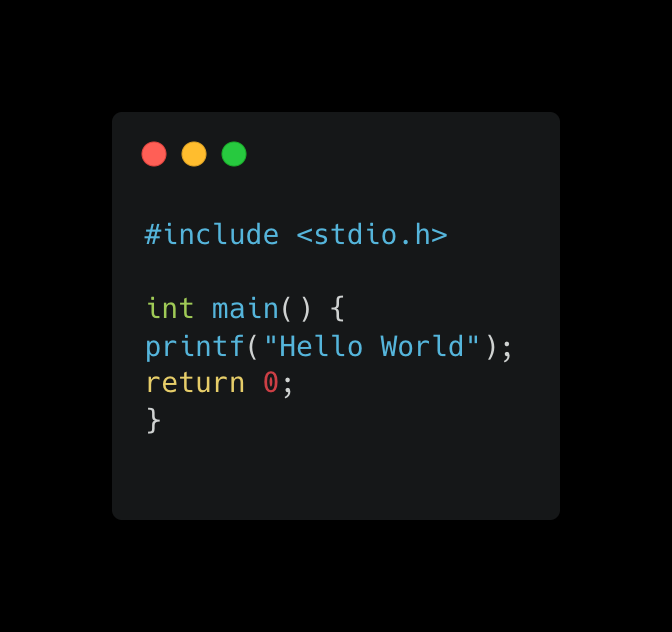
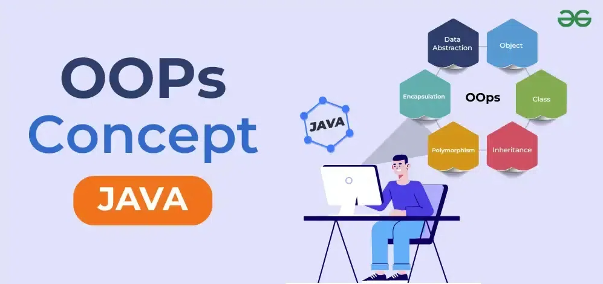

Algonquin College: Computer Programming
Learn workplace-ready programming languages and practical applications to use wherever your career takes you.
This two-year Computer Programming Ontario College Diploma program prepares students for a career in software development. The program also specializes in program development strategies (using object-oriented modelling), database design and database administration.
This page contains the courses that I have completed during my study period in Algonquin College
Level 1 Courses
-

CST8116: Introduction to Computer Programming
Students develop introductory knowledge of computer programming with emphasis on problem analysis and design, using algorithms, pseudocode, flowcharts, UML Class Diagrams and testing, with the Java programming language used as a means to implement problem solution designs.
-
CST8118: Computer Essentials
Students explain computer hardware, and use operating system software to maintain, utilize, and secure a computer. Students practice the use of spreadsheet software to solve problems, use formulas, and visualize data with charts.
-
CST8215: Introduction to Database
Students learn the fundamentals of relational databases design using Entity Relation Diagrams (ERDs), and use Structured Query Language (SQL) to create, modify and query a database.
-
CST8300: Achieving Success in Changing Environments
Students explore the possibilities ahead, assess their own aptitudes and strengths, and apply critical thinking and decision-making tools to help resolve some of the important issues in our complex society with its competing interests.
-
ENL1813T: Communications I
Through a combination of lectures, exercises, and independent learning, students practise writing, speaking, reading, listening, locating and documenting information and using technology to communicate professionally. Students develop and strengthen communication skills that contribute to success in both educational and workplace environments.
Level 2 Courses
-
CST8102: Operating System Fundamentals (GNU/Linux)
Students explore the basic concepts and components of Operating Systems (OS), and how they function and interact with hardware and software components.
-

CST8284: Object Oriented Programming (Java)
Students explore object-oriented programming methodology using the Java programming language. Object oriented concepts, such as encapsulation, inheritance, abstraction and polymorphism are covered and reinforced with practical applications.
-
CST8285: Web Programming
Students develop basic skills of web programming, website design and implementation. JavaScript, HTML5, and PHP are used to explore web-based solutions to problems of increasing interactivity and complexity.
-
CST2355: Database Systems
Students acquire practical experience using market-leading object-relational database management systems like Oracle and MySQL.
-
ENL2019T: Technical Communication for Engineering Technologies
Students are exposed to exercises and assignments designed to foster independent and collaborative critical thinking, research, writing, visual communication and presentation skills related to technical topics.
-
GEP1001: Cooperative Education and Job Readiness
Students are guided through a series of activities that prepare them to conduct a professional job search and succeed in the workplace. Through a detailed orientation students learn the cooperative education program policies and procedures related to searching and securing a work term opportunity.
You can visit the school website for more information about the Computer Programming program here